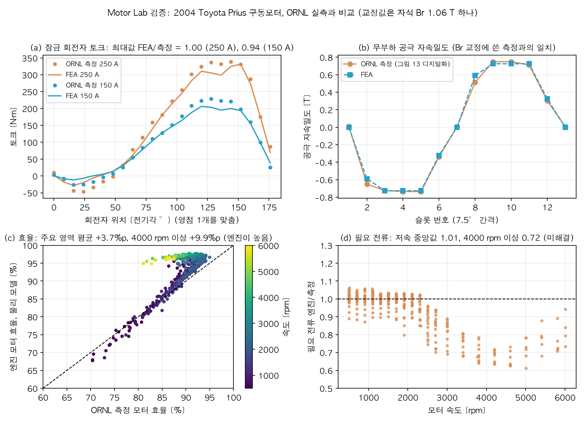

Motor Lab
EV 구동 모터(IPMSM): 설계 변수 → dq 모델 → 운전 영역 → 효율맵 → 주행사이클 전비를 한 번에 계산하는 해석 도구 · 순수 Python 엔진(NumPy·SciPy) + FEA 검증 + 3D 화면
1. 풀려는 문제
구동 모터의 설계값(형상, 자석, 권선)이 차량 전비에 미치는 영향은 보통 FEA, 제어, 차량 시뮬레이션을 따로 돌려 이어 붙여야 보인다. 이 프로젝트는 그 흐름을 하나의 코드로 이어, 공개 실측이 있는 모터(2004 Toyota Prius MG2, ORNL 보고서)로 어디까지 맞고 어디서 틀리는지를 숨기지 않고 보이는 것을 목표로 한다.
2. 방법
- M1 dq 모델: 진폭 불변 Park 변환, T = 1.5·p·(ψd·iq − ψq·id). 자속은 FEA로 만든 (id, iq) 자속 맵을 이중선형 보간.
- M2 운전 영역: 전류 한계(250 A)·전압 한계(Vmax = (2/π)·Vdc, 육각파)에서 MTPA와 약계자 전류 결정.
- M3 손실·효율맵: 구리손(R = 0.069 Ω @21 °C, 온도 보정), 기계손+무부하 철손(ORNL TM-423 표 3.7 회전자 손실 피팅), 선택형 경험적 잔여 손실(보정이므로 별도 표시).
- M4 전비: F = m·dv/dt + (A + B·v + C·v²), 기어 비 60.66 rpm/mph, 회생은 효율맵 대칭으로 계산. WLTP·UDDS·HWFET.
- FEA: xfemm(femmcli)로 전체 모터 공극 메시를 풀어 자속 맵과 잠금 토크를 만든다. 형상은 ORNL 해체 측정값(자석 18.9×6.5×83.1 mm, 공극 0.73 mm).
- 규칙: 모든 상수는 출처와 단위를
data/에 기록, 근거 없는 보정계수 금지, 엔진 테스트 124개 통과. 화면의 숫자는 모두 엔진 값.
3. 검증 결과

교정에 쓴 값은 자석 잔류자속밀도 Br = 1.06 T 하나이다(시료 곡선의 1.243 T보다 약 15% 낮다. 역기전력, 공극 자속밀도, 잠금 토크의 세 독립 측정이 같은 값을 가리키지만 물리적 이유는 아직 모른다).
4. 한계 (먼저 밝힌다)
| 항목 | 결과 | 상태 |
|---|
| 잠금 토크 최대값 FEA/측정 (그림 3.10) | 0.94 (75·150 A), 1.00 (250 A) | 교정에 쓰지 않은 측정과 일치 |
| 저속 필요 전류 엔진/측정 | 중앙값 1.01 | 일치 |
| 고속(> 2400 rpm) 필요 전류 엔진/측정 | 중앙 0.72 (0.61~0.94) | 미해결: 엔진이 전류를 적게 예측 |
| 모터 효율, 물리 모델 | 주요 영역(1000~4000 rpm) +3.7%p, 4000 rpm 이상 약 +10%p (엔진이 높음) | G1 관문 미달 |
| 모터 효율, 경험적 잔여 손실 포함 | RMS 1.3%p | 같은 벤치마크에 맞춘 보정이라 검증으로 세지 않음 |
| 75 A 잠금 토크 | 실측보다 13% 낮음 | 원인 미확인 |
- 미달의 원인 탐색: 자석 포켓 가설은 ORNL 해체 자료로 기각했다. 잔여 손실은 자속이 아니라 전류²·주파수²에 상관되고, 정현파 전원 시험에는 거의 나타나지 않아 인버터·PWM 관련일 가능성이 있다(증명하지 못함).
- 전비(WLTP 약 10 km/kWh)는 모터 입력 기준, 순수 전기 구동 환산, 인버터·배터리·보조 부하 제외. 고속 구간이 긴 사이클은 낙관적일 수 있다.
- 설치 파일(DMG/EXE) 생성과 실제 GPU fps 측정은 아직 검증하지 않았다.
5. 화면 (P4)
React + react-three-fiber 3D 스튜디오: 출처 있는 치수로 그린 모터를 분해·단면으로 보고, FEA 자속 분포, 운전점(전류·전압·손실·효율), 드라이브 모드 전비를 확인한다. 출처가 없는 부품(단자부, 레졸버, 베어링)은 "도식"으로 표시한다. Electron 셸로 데스크톱 앱 창을 연다.
6. 이 프로젝트가 보이려는 것
- 설계 변수에서 차량 전비까지 하나의 추적 가능한 계산 사슬.
- 모든 숫자에 출처가 있고, 맞지 않는 결과도 원인 탐색 과정과 함께 기록.
- 본인이 모든 수식과 코드를 설명할 수 있도록
docs/derivations.md에 유도를 정리.
7. 링크
| 저장소 README | README.md |
| 검증 보고서 | docs/validation_report.md |
| FEA 한계와 교정 과정 | docs/FEA_OPTIONS.md 3-4·3-6절 |
| 수식 유도 | docs/derivations.md |
| 데이터 출처 | data/benchmarks/prius2004_ornl.md |